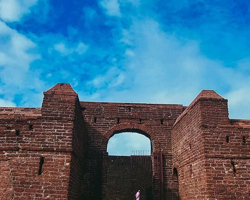

Bakal Fort
This is the largest and best-preserved fort in Kerala, built in the 17th century by the rulers of the Ikkeri dynasty. It is situated on a rocky promontory overlooking the Arabian Sea, and offers a stunning view of the coastline. The fort has a circular shape, with bastions, observation towers, and a magazine. It also has a mosque, a temple, and a water tank inside. The fort was used as a military base by various powers, including the Portuguese, the Mysore Sultanate, the British, and the Travancore Kingdom. It is now a protected monument and a popular tourist attraction.

